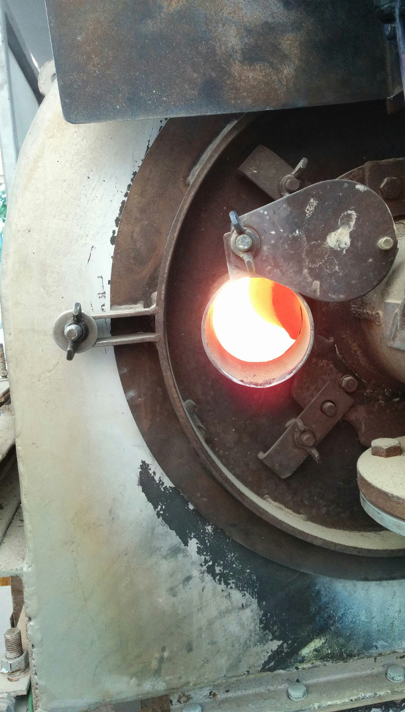

High-temperature cement kiln modelling
AToMS 2018
Marcus N. Campbell Bannerman
m.campbellbannerman@abdn.ac.uk
Why cement?
Scientists discover the world that exists; engineers create the world that never was.
T. von Kármán
We've being creating a lot of new world recently:
In the last two years (2016-17) china's
total cement sales equaled the USA's in
the entire last century (1900-2000).
- (2013-2016) £3.3M Green-Concrete Project (GCP) sponsored by the Gulf Organisation for Research & Development, Qatar. PIs: F. P. Glasser and M. S. Imbabi, (10+ PDRAs, 10+PhDs @ Aberdeen).
- One PhD student (Dr Theodore Hanein), three years (at 10%), and £250k to take a partially-verified lab-scale sulfur-burning $\text{C}\bar{\text{S}}\text{A}$ process through pilot trials and design a full-scale process.
Formulations team
Prof. F. Glasser

- Atmospheric control tubular furnace.
- Phase compatibility of $\text{C}\bar{\text{S}}\text{A}$.
- Demonstrate the sulfur-transfer process.
- Limited testing of raw mixes and products.
Production team
Me

- Full-scale sulfur-buring process design.
- Pilot trials, IBU-tech, Weimar to produce clinker for product testing and process verification.
Products/Hydration team
Dr. M. Imbabi


- Synthetic clinker work to determine optimal target formulations.
- Testing of trial clinker.
(and there was a recycled aggregates team led by Prof. Rod Jones)
-
We achieved all our goals in 2.5
years, with <£100k spent on 20+ trial
points (>15kg product each, one 100kg
production run), thanks to a few key
aspects:
- Careful atmospherically-controlled tubular furnace experiments testing thermodynamic predictions.
- Extensive predictive thermodynamic modelling of tubular furnace and pilot kilns (incl. atmospheres).
- If I'd read the literature first, I would have never attempted it or I would have asked for more time and money.
- Misprints in compiled data sets. E.g., $\text{C}_3\text{A}$ in Babushkin et al. 1985.
- Unknown sources of incorrect data (which only becomes apparent after detailed inspection). E.g., $\text{C}_4\text{AF}$ in Babushkin et al. 1985.
- Errors in coefficients and/or tabulated data. E.g., NIST(!) C-A-S-H compilation of Haas Jr. et al. 1981.
- Dangerous rounding. E.g., E.g., $C_p=1120\approx 1100$ in Kelley 1960.
- Significant "unknown" revision of data, E.g., rankinite compiled by NIST revised significantly by Hillert et al. 1991.
- Missing or incorrect ye'elimite and ternesite data.
- Much of this is known in the oral history of cement, but why do new people have to keep rediscovering it?
- NASA shares rocket/ICBM calculations, can we share a cement database?
- The database uses the following main sources of information:
- NASA CEA database for combustion/rocketry.
- Holland and Powell (2011) database for petrological mineralogy.
- Around 80 individual sources added by hand.
- Primarily stochiometric phases, but end-member models from Holland and Powell are nearly there.
- Some mineralisation accounted for using entropic effects only (thanks to Duncan for the idea).
- Melt data is currently incomplete so its disabled.
- The free-energy minimizer uses a unique generating function approach and my own compile-time computer algebra library (Stator), combined with a range of general optimizers (IPOpt, NLOPT/SLSQP) with some modifications (more information on request).
Example applications
- Box and tubular furnace experiments demonstrated irregular results.
- Example: Ternesite would only form in box furnaces using sacrificial $\text{C}\bar{\text{S}}$ (see right), not in the tubular furnace using 50:50 bottled dry air:$\text{SO}_2,$ or under pure $\text{SO}_2$ atmospheres.
-
Formulation team's conclusion:
Ternesite stabilized by
atmospheric moisture?
Y. B. Pliego-Cuervo and F. P. Glasser. “Role of sulphates in cement clinkering: the calcium silicosulphate phase”. In: Cement and Concrete Research 8.4 (1978), pp. 455–459. - What does thermodynamics tell us?


- Ternesite is only stable for a range of $\text{S}\text{O}_2$ partial pressures: previous tubular furnace experiments were always either too rich or too lean in $\text{S}\text{O}_2$. T. Hanein, I. Galan Garcia, F. P. Glasser, S. Skalamprinos, A. Elhoweris, M.-E. Imbabi, and Bannerman, “Stability of ternesite and the production at scale of ternesite-based clinkers,” Cement Concrete Res., 98, 91-100 (2017)
- Targeted firings in the "goldilocks" zone formed ternesite at high purity in a single stage (allowing further $C_p$ analysis via DSC).
- Simple Bogue-style equations are dangerous to use for $\text{C}\bar{\text{S}}\text{A}$, as the atmospheric effects are not trivial.
- Similar effects are present for ye'elimite, thus kiln atmospheres are critical in $\text{C}\bar{\text{S}}\text{A}$ synthesis.
- Its clear that the atmosphere is important in OPC at lower temperatures for calcination, but we also see strong effects on spurrite stability!


- Thermodynamics is only one piece of the high-temperature clinker puzzle.
- All 23 GCP pilot trial points were designed using thermodynamics and were mostly successful.
-
One of the “challenging” trial
points at a target temperature of $1300^\circ$C
is examined. The target was ye'elimite
using high alumina clay instead of bauxite.
Phase $\text{C}_4\text{A}_3\bar{\text{S}}$ $\text{C}_2\text{S}$ $\text{C}_5\text{S}_2\bar{\text{S}}$ $\text{C}\bar{\text{S}}$ Thermodynamics 33% 55% 0% 0% XRD analysis 34% 44% 14% 3% - Thermodynamics fails to predict the appearance of ternesite. What does thermodynamics miss?

- Although kinetics are a factor (more so at low temperatures), our experience shows understanding the actual rather than targeted processing conditions/temperature is far more important.
- Also, heat transfer is controlled via fuel/air rates, which changes the atmosphere within the kiln. If the atmosphere plays a role, then heat transfer is inextricably linked with the clinker thermodynamics.
- A combined thermodynamics and kiln heat-transfer model has been developed to target these issues.
- Our kiln model is fully predictive: inlet gas temperature from adiabatic flame calculation, solids at room temperature. No fitting.
-
It is difficult to get direct thermal
measurements from production kilns:
- Surface temperatures and exit bed temperature are measured via optical pyrometry (which was also used to control the kiln temperature).
- Internal temperatures via thermocouple wells (fixed to wall, so they rotate in and out of the bed).


Conclusions
- Simple equilibrium thermodynamic models are surprisingly powerful.
- Atmospheric control is crucial in modern cement kilns.
- Combined thermal and thermodynamic models are predictive.
- New processes can be designed or old debugged/optimized.
- Lots of interesting future work (e.g., solid solutions, bed models, economics, carbon calculations, plant optimisation).T. Hanein, J. L. Galvez-Martos, and M. N. Bannerman, “Carbon footprint of calcium sulfoaluminate clinker production,” J. Clean. Prod., 172, 2278–2287 (2018)
- What tools would you like to see on SimCem.com?
Acknowledgements
- Thanks to all the members of the GCP team for their input over the years.
- Thank you to the Gulf Organization for Research and Development (GORD), Qatar for their the financial support provided by the through research grant number ENG016RGG11757.
- Thanks to Dr Theodore Hanein in particular who was the driving force behind the work.
- Thank you to IBU-tech and their team for their support during the trials.